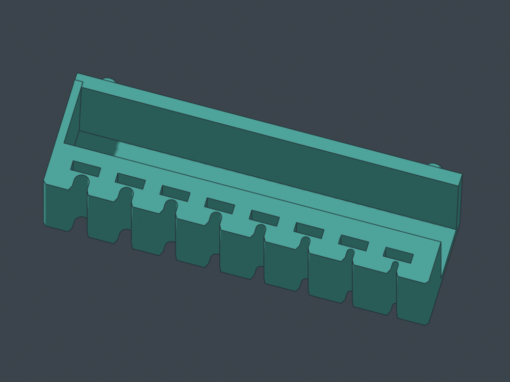
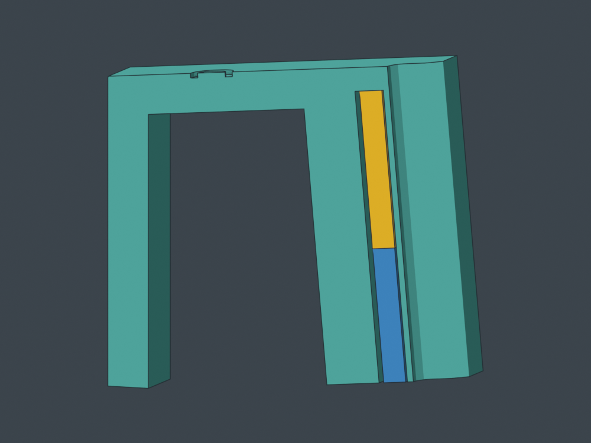
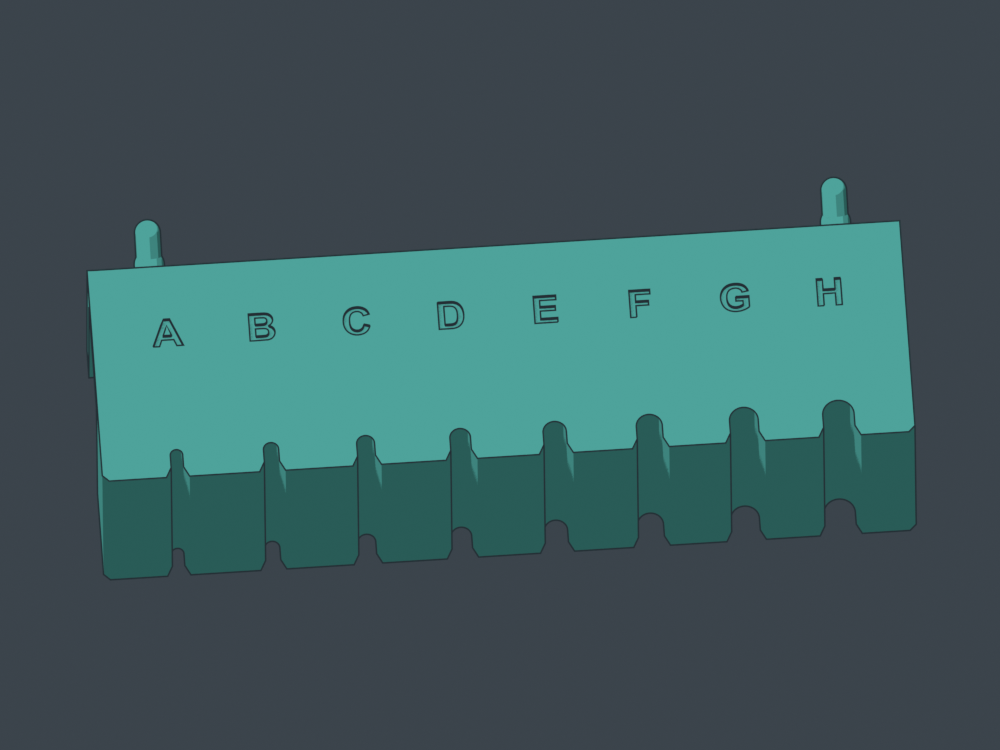
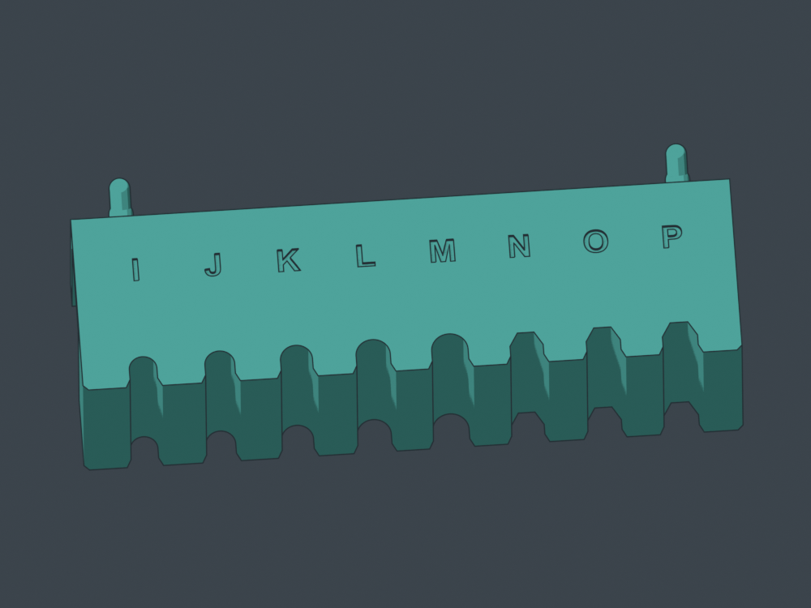

Test the fit. Keep the magnets.
MS01 v3 · open-channel version. Same A-P shaft seats and tighter pegs. Wider magnet channels stay open so your 20 × 10 × 3 mm magnets can slide back out.
Load after printing. No pause, no permanent cap. The channels face down when mounted: loose spacers plus removable tape keep the magnets in place for the trial.
Download and print
- Complete print kit ZIP
- Sliced P1S / PLA job — no pauses
- Editable Orca project
- Loading and recovery instructions
- Letter feedback sheet
P1S / 0.4 mm / PLA. Three plates: sixteen spacers (9.25 g / 31 minutes), A-H (103 g / 4 h 8 min), I-P (101 g / 4 h 5 min). Each strip is 150.4 mm wide.




Load, test, recover
- Finish the print and let it cool. Hold the strip inverted with its channel mouths upward.
- Slide in a magnet, then a 17 mm loose spacer. Tape across the mouths and onto the solid back of the bar, clear of the tool seats.
- Mount and try one driver at a time. You can move a single magnet between letters.
- Remove the holder, support it over a tray, peel the tape and slide the spacer and magnet out.
Channels are 10.8 × 3.8 mm: 0.4 mm clearance per side around centered nominal magnets. The shaft-facing skin remains 0.8 mm. Magnets can move within the clearance; keep them against that wall for repeatable comparisons. Actual magnetic feel and sliding fit await your test.
Rotate the real models
STEP and STL files
- part-ms01-shaft-fit-sampler-20x10x3-recoverable__v3__A-H__installed__fit-e586ab4ff6.step
- part-ms01-shaft-fit-sampler-20x10x3-recoverable__v3__A-H__installed__fit-e586ab4ff6.stl
- part-ms01-shaft-fit-sampler-20x10x3-recoverable__v3__A-H__print-flat-top__fit-e586ab4ff6.step
- part-ms01-shaft-fit-sampler-20x10x3-recoverable__v3__A-H__print-flat-top__fit-e586ab4ff6.stl
- part-ms01-shaft-fit-sampler-20x10x3-recoverable__v3__I-P__installed__fit-e586ab4ff6.step
- part-ms01-shaft-fit-sampler-20x10x3-recoverable__v3__I-P__installed__fit-e586ab4ff6.stl
- part-ms01-shaft-fit-sampler-20x10x3-recoverable__v3__I-P__print-flat-top__fit-e586ab4ff6.step
- part-ms01-shaft-fit-sampler-20x10x3-recoverable__v3__I-P__print-flat-top__fit-e586ab4ff6.stl
- part-ms01-shaft-fit-sampler-20x10x3-recoverable__v3__loose-spacer-print-broad-face-quantity-16__fit-e586ab4ff6.step
- part-ms01-shaft-fit-sampler-20x10x3-recoverable__v3__loose-spacer-print-broad-face-quantity-16__fit-e586ab4ff6.stl
What has been checked
Valid solids and STEP round trips; changes confined to the magnet channels; clear straight magnet/spacer extraction; unchanged seats and pegs; native sliced job and settings reslice; no mesh repairs; bed bounds and startup clearance. All sixteen channels remain open through the final layer, with no magnet-loading pauses. Physical printing, sliding and retention remain untested.